大商学園
ICT・生成AIコンテスト
2026
事前の応募から選ばれた教職員による、生成AIやICTを活用した取り組みの共有。結果だけでなく、失敗や試行錯誤の過程もオープンに共有し、「挑戦する姿勢」を称え合う場となりました。
Messages
01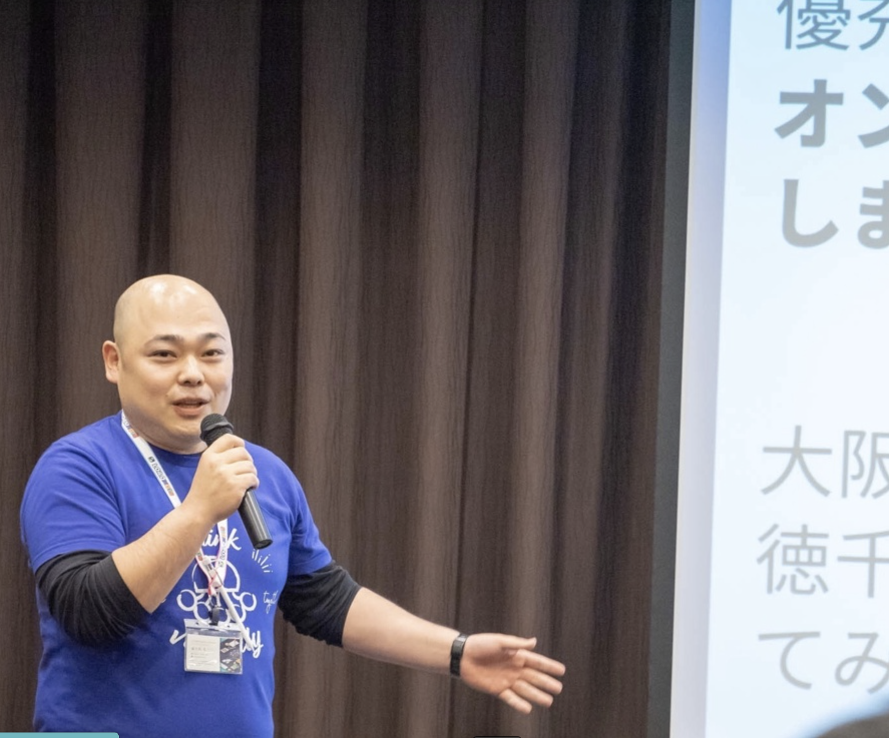
徳千代太一 先生
（ロイロ認定イノベーター）
AI時代において、「問い続ける人」「学び続ける人（ラーナー）」であることの価値を強調。知識の習得だけでなく、常に新しい技術に触れ、挑戦し続ける学校法人の姿勢を高く評価しました。
澁谷 さん
（株式会社LoiLo）
全国の学校に対しても、大商学園での先進的な取り組みを発信していくことの意義を語りました。
Departments
02勤続1・2年部門
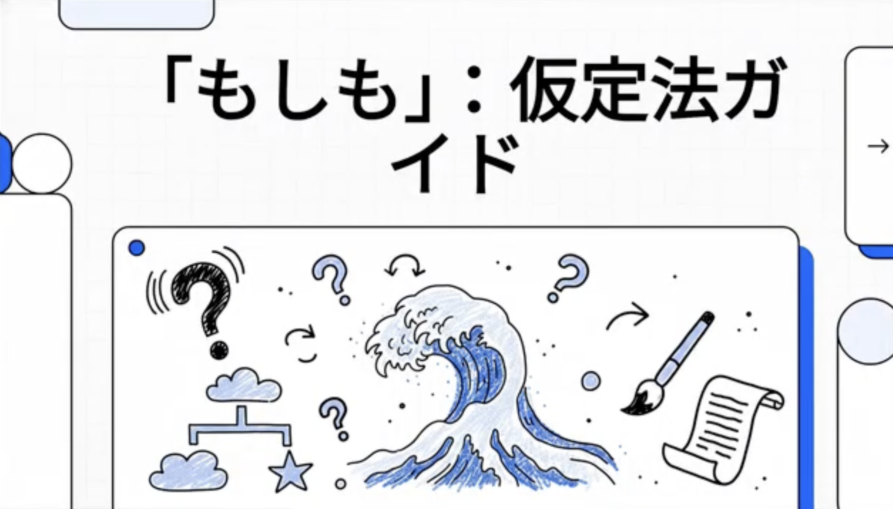
ピチピチ・アナログ世代の挑戦
英文法の説明にGeminiで生成した視覚的なイラストを活用。スライドをロイロノートで配布し、欠席者向けにはAIを活用して解説動画も作成。小テストにゲーミフィケーション（チーム対抗のゲーム等）を取り入れ、生徒の学習意欲や定着率の向上に成功しました。
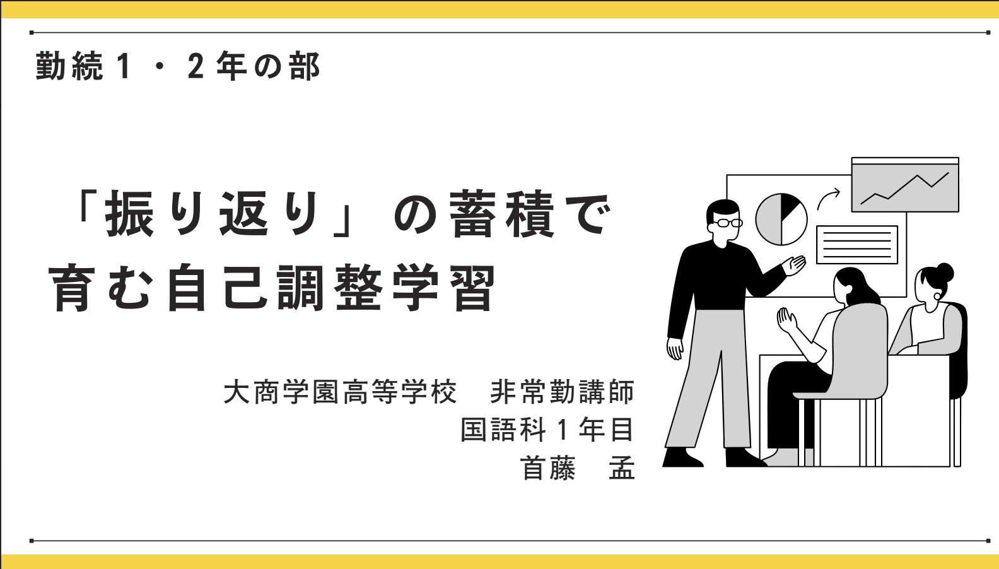
「振り返り」の蓄積で育む自己調整学習
『真の自立』の単元において、授業の最初と最後に目標や振り返りを記入する「学習計画表」を導入。「説明活動」を軸にし、教員からの一方的な伝達ではなく生徒同士の対話や教え合いを促進しました。結果として、生徒それぞれの記述の質・量ともに向上し、主体的な深い学びが実現しました。
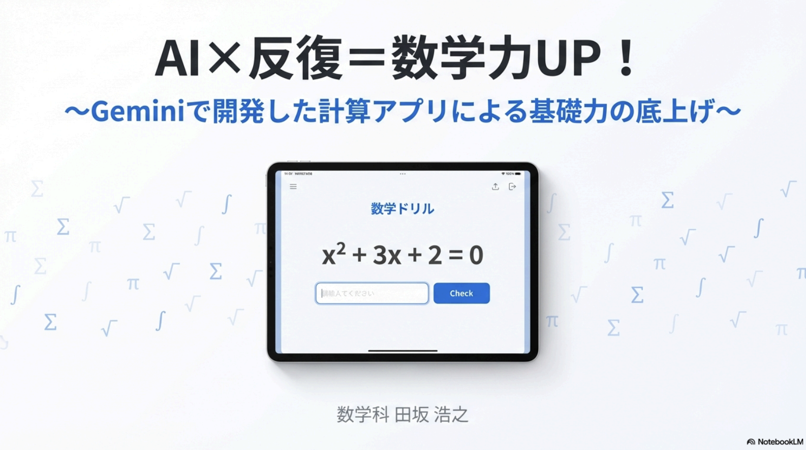
AI×反復＝数学力UP！
紙のプリントでは難しい「正解するまで繰り返し解かせる」反復練習を、Geminiキャンバスを用いてWebアプリ化（Googleサイトに集約）。生徒は「なんとなく分かった」で終わらず、自力で正解するまで取り組むため、質問の量が増え、理解度が大幅に改善しました。
勤続3年部門

ＡＩで商品企画
昨年度の商品開発において生徒にAIの使用を丸投げしたが、AI不使用のチームよりも評価が下がるという「失敗」を経験。原因は「プロンプト（指示書）の立て方」や生徒自身の前提知識の不足にあると分析しました。この反省を活かし、後の公開授業ではプロンプトを周到に準備して成功を収めました。
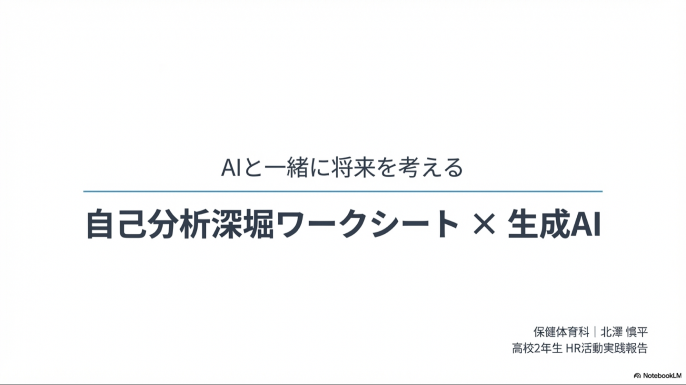
AIと一緒に将来を考える
高校2年生の進路選択において、「自分が何をしたいのか分からない」という生徒に対しAIを活用。自己分析（過去の経験、強み、興味）やワークスタイル診断をAIに行わせ、さらに「10年後の自分へのインタビュー」といったワークを通じて、生徒自身に合う職業や志望大学を主体的に考えさせる機会を作りました。
勤続4年〜7年部門
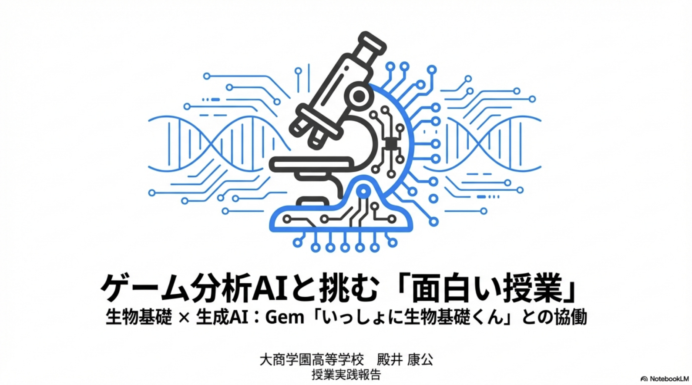
ゲーム分析AIと挑む『面白い授業』
単に知識を与えるだけの授業から脱却し、「ゲーム分析AI」を活用。カイヨワの「遊びの4要素（競争・運・擬態・目眩）」を組み込み、生徒自身が選択・体験するゲーム型の授業を展開。マングースやネズミの駆除を選択させることで, 生態系への影響を自分事として学ばせました。
私の「推し」を最強にする！
生徒のプレゼン内容が「薄くてまとまりがない」という課題に対し、Geminiを導入。ロイロノートの思考ツールでアイデアを整理後、AIを壁打ち相手としてプレゼン構成を練らせました。スライドの文字数制限と「画像はAI生成」という制約を敷くことで、生徒は個別のこだわりを持って取り組むようになりました。
勤続8年〜10年部門
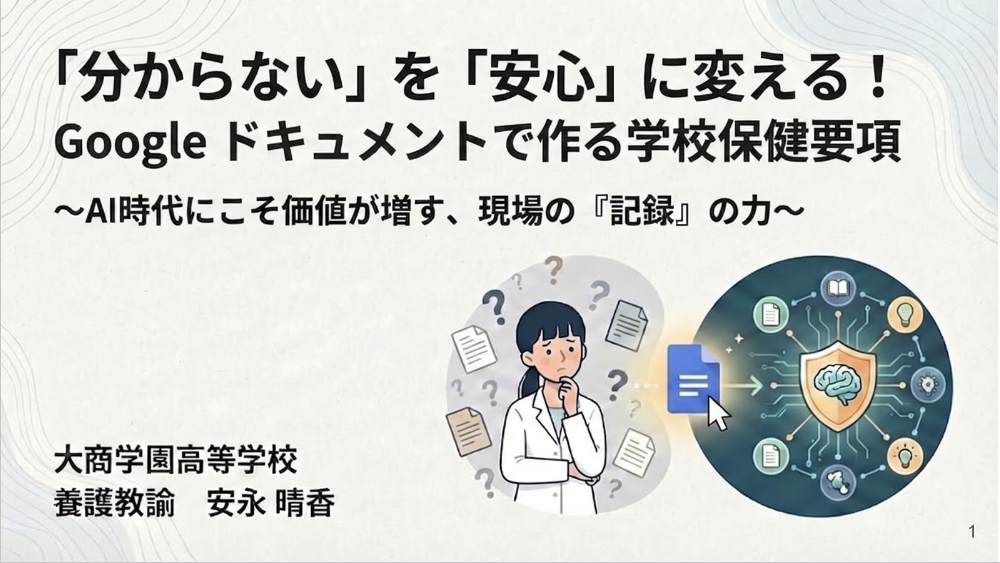
学校保健要項のデジタル化
「誰が見ても学校のルールが分かる」ように、Googleドキュメントとリンクを活用して学校保健要項を整理。さらに、Geminiのディープリサーチを用いてGoogleドライブ内の情報を検索し、生徒ごとの健康記録を統合・可視化して全体像を素早く把握する仕組みを構築しました。

来客管理のデジタル化提案
これまで紙で行っていた来客管理に伴う情報漏洩のリスクを指摘。Googleカレンダーと連携した来客予約・通知システムを提案し、教員への事前通知の自動化による業務負担軽減や、スケジュールの盗み見防止など、デジタル移行の重要性を説きました。
勤続15年以上部門
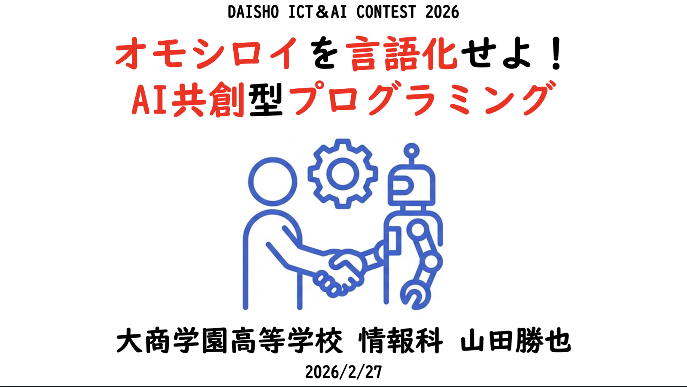
オモシロイを言語化して実装せよ！
AIがいとも簡単にコードを書いてしまう状況に際し、「コードを書くこと自体の評価」に限界を感じました。そこで、遊びの4要素を使って「面白さを言語化・構成するAI」を構築。生徒はAIを相手に仮説検証と試行錯誤を繰り返し、「AIに要望を正しく伝える力」と「深い思考力」を身につける成長を見せました。
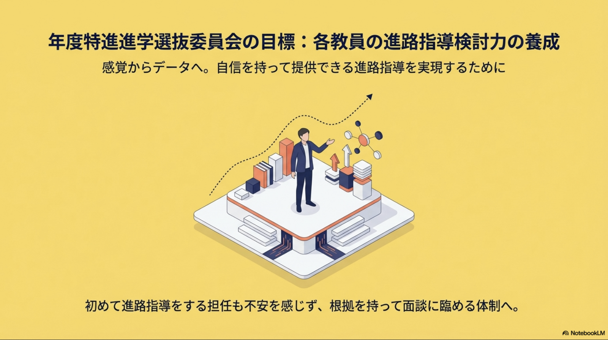
進路指導力養成のために
若手教員でもベテラン同等の質の高い進路指導ができるようAIを活用。生徒の模試成績、推薦入試の合否ライン、各大学の入試説明会情報、Geminiのディープリサーチで収集した学部学科の情報を全てNotebookLMに集約。大学ごとの特徴や、生徒の成績に応じた合格可能性ラインを瞬時に検索できる補助ツールを構築しました。
Grand Prix Nominees
03
今年の活用報告書
用途に応じたAIツール（NotebookLM、Gemini、Claudeなど）の使い分けを実践。教科書PDFをNotebookLMに読み込ませたテキスト生成、YouTube向け解説動画の自作、数学特化AIを用いた解説を実施。学級運営では、ロイロノートで提出させた志望理由書をClaudeに添削させるなど、多様なタスクにAIを活用しました。
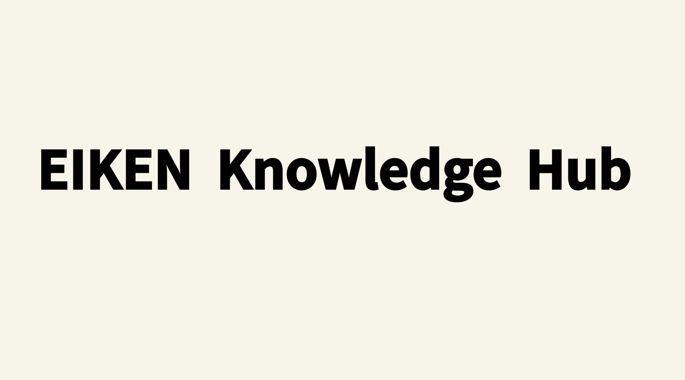
Eiken Knowledge Hub
1200名強が受験する英検の大規模運用を支えるポータルサイト『英検ハブ（Googleサイト）』を構築。高得点ライティングの共有、Geminiを用いた瞬時のライティング添削、運営教員向けの質の高いマニュアル、NotebookLMを活用した面接対策ガイドなどを集約。教員の負担軽減と生徒のスコア向上という両面で劇的な効果を上げました。
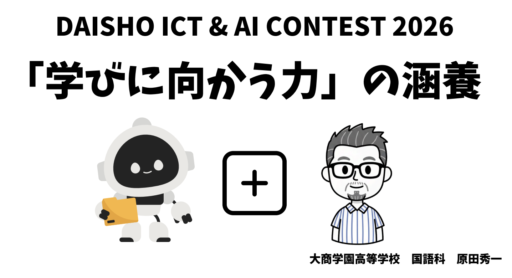
「学びに向かう力」の涵養
自己調整学習に基づく『レギュレートフォーム』の活用。生徒に「見通しと振り返り」「学習方略（学びの工夫）」を記述させ主体性を育成。さらに、全員分のフォーム（PDF）をAI（Gemini等）で一括で読み込み、AIによるフィードバックをLooker Studio等で可視化する仕組みを構築。「AIに助けられつつ、最後は教員の手書きなどの身体性で感情を伝える」意義を説きました。
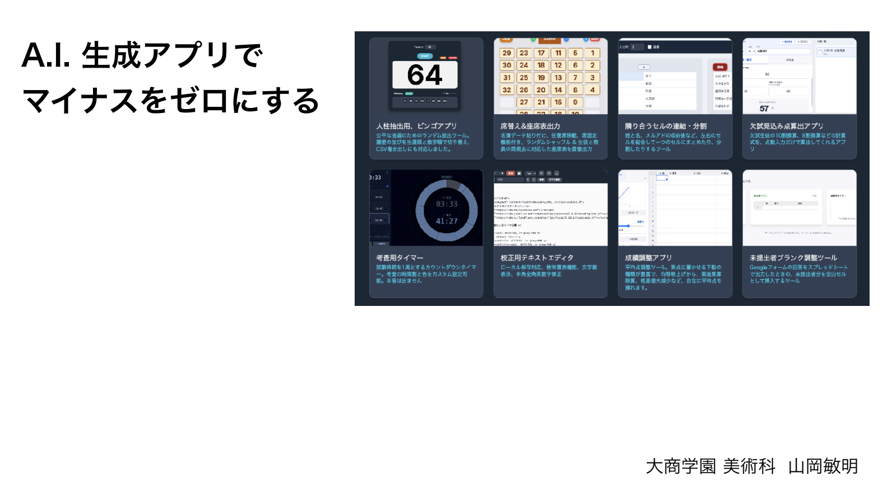
AI生成アプリでマイナスをゼロにする
AIにコードを書かせ、学校業務を効率化する自作Webアプリを多数開発（多機能な座席表アプリなど）。授業ではこの経験を活かし、生徒自身に「時計アプリ」を作成させました。「時間の流れをどう表現するか」というアイデアをAIのコーディング力で形にし、「物理的制約から思考を解放する」というテクノロジーの真の価値を示しました。

寺子屋的授業を目指して
「一斉授業から、個別最適化された寺子屋的授業へ」の挑戦。AIを使って「第一次大戦後の各国のつぶやき」を生成して国を推測させるクイズ形式の導入や、「当時の天才演説家になりきったAIとチャットさせる」試みを実施。教員が個別に生徒をサポートする時間を創出しました。
🏆 コンテスト最終結果
-
1st
原田 秀一 先生 「学びに向かう力」の涵養
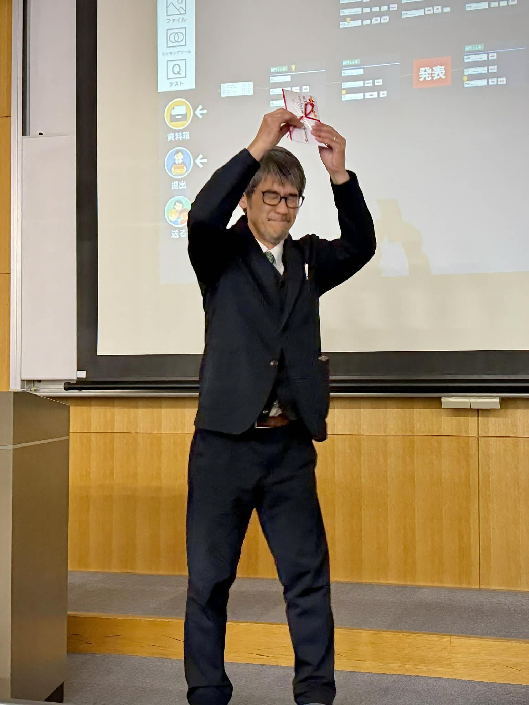
-
2nd
政岡 広樹 先生 Eiken Knowledge Hub
-
3rd
山岡 敏明 先生 AI生成アプリでマイナスをゼロにする
※部門別・グランプリ共に、参加者全員の「挑戦」が高く称えられました。
Reviews
04澁谷さん ＆ 徳千代先生 講評
多くの学校が「使うか・使わないか」で悩んでいる中、これほど前向きに、葛藤や失敗も含めてICT・AIを活用している大商学園の姿勢は素晴らしい。本日の実践例は全国の先生方の希望となる、と絶賛しました。
校長先生 講評
ICTへの苦手意識を持つ先生もいる中、若手教員から事務方まで多様な発表があり刺激的でした。挑戦しなければ何も得られない。先駆者の実践を真似ることで、少しずつハードルを越えていってほしいと語りました。